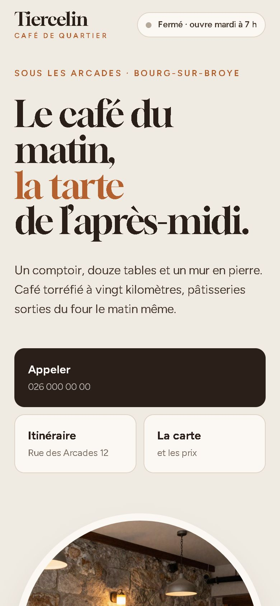

Estavayer-le-Lac · Broye fribourgeoise
Création de site internet à Estavayer-le-Lac.
Pour les restaurants, commerces et artisans d’Estavayer et de la Broye fribourgeoise. Vous voyez votre site en maquette, gratuitement, en 24 h. Vous décidez ensuite.
- Maquette gratuite en 24 h
- Dès 350 CHF
- Sans engagement
Des clients qui ne vous connaissent pas encore.
Au bord du lac, une partie de vos clients découvre Estavayer. Ils cherchent sur leur téléphone où manger, où acheter, qui appeler. S’ils ne trouvent ni vos horaires, ni votre carte, ni votre numéro, ils vont chez le voisin.
Un site clair, qui s’affiche bien sur téléphone, leur donne ces réponses en quelques secondes.
En français, et en allemand si vous le souhaitez.
Si une partie de votre clientèle parle allemand, vos pages principales (carte, horaires, prestations) peuvent aussi exister en allemand. On en parle avec la maquette : le prix exact est indiqué par écrit avant de commencer.
Une carte et des horaires qui changent avec la saison.
Horaires d’été, menu du jour, fermeture exceptionnelle : vous envoyez un message, le site est mis à jour. Pas besoin d’apprendre un logiciel ni de chercher un mot de passe.
Sites pour restaurants et cafés · Coiffeurs et instituts · Artisans et garages
Exemple (commerce fictif)
Un café avec sa carte et l’ardoise du jour.
- La carte lisible sur téléphone, sans PDF flou
- Le plat du jour mis à jour en un message
- Appeler et itinéraire en un geste

Comment ça se passe
- 1
Vous écrivez
Le nom de votre commerce, sur WhatsApp. C’est tout.
- 2
Vous voyez
Votre maquette arrive en 24 h, avec le prix exact.
- 3
On ajuste
Vos remarques, vos photos, vos horaires.
- 4
C’est en ligne
En général en un à deux jours.
Maquette offerte · création dès 350 CHF · suivi dès 30 CHF / mois (hébergement, nom de domaine, petites modifications). Prix exact par écrit avec la maquette. Voir les tarifs
Questions
Wibzo travaille aussi dans le canton de Fribourg ?
Oui. Wibzo est basé à Payerne et travaille dans toute la Broye, côté vaudois et côté fribourgeois.
Pouvez-vous faire le site en allemand ?
Oui, sur demande, pour les pages principales. Le prix exact est donné par écrit avec la maquette.
Ma carte change souvent.
Vous envoyez la nouvelle carte ou le plat du jour par message, je mets le site à jour. C’est compris dans le suivi.
Combien coûte un site ?
Création dès 350 CHF, puis dès 30 CHF par mois. La maquette est gratuite et sans engagement.
Envoyez juste le nom de votre commerce.
Vous recevez votre maquette en 24 h. Gratuitement.
Recevoir ma maquette gratuiteou appelez le 076 757 43 93